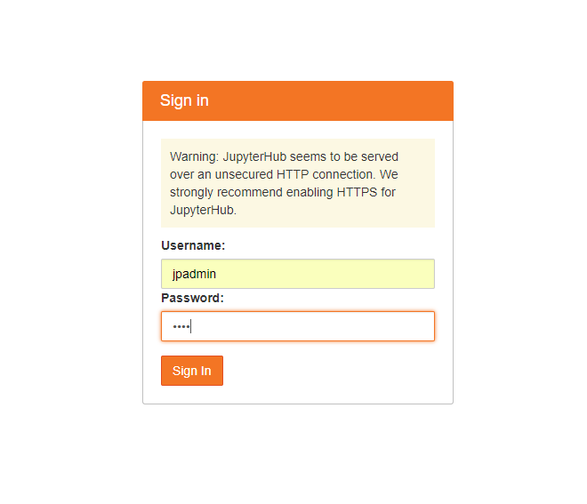
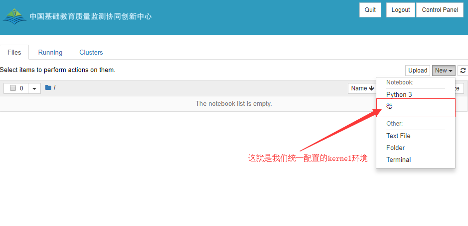
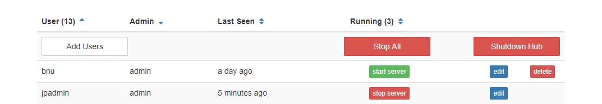

Ubuntu下多用户版jupyterhub部署
最近培训关于Python的一些课程,因为面对的是一些不太了解编程的研究生,后期可能会遇到配置开发环境等等一系列问题,所以Leader决定在工作站部署一个多用户版的jupyterhub供大家学习使用.
需求:
- 大家统一使用一个虚拟环境,解决重复配置开发环境问题
- 能够实现多用户登录,每人对应一个账号密码
- 改造一下登陆后的template,可以造成让大家以为这玩意儿是我们开发的假象~
环境部署
本地环境:
- Python 3.5.2
- Linux4.4.0-128-generic_x86_64
安装jupyterhub
新建一个虚拟环境:
1 | mkvirtualenv jupyterhub |
1 | 安装最新版本的npm/nodejs-legacy |
判断是否安装成功:
1 | jupyterhub -h |
启动:
1 | Visit https://localhost:8000,默认端口号8000 |
jupyterhub配置
1 | 新建一个用户,用作管理所有jupyterhub下的账号信息 |
kernel配置
注意: 如果此后是通过jupyterhub admin前端添加的用户,还是需要过来这里添加kernel信息,不然只会使用全局变量里的Python解释器
1 | 安装ipykernel |
template配置
全局替换: 把准备好的custom文件 放到 /home/.virtualenvs/jupyterhub/lib/python3.5/dist-packages/notebook/static/custom 下进行替换
启动jupyterhub服务器
1 | workon jupyterhub |
关闭jupyterhub服务器
1 | ps -fA | grep python |
登录测试:

Kernel:

AdministratorControl:
